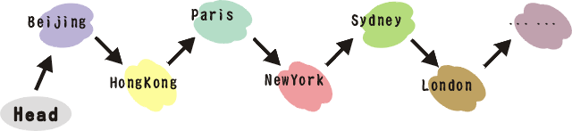

Lab 9: Pointers and Linked Lists
Topics
- Pointers and arrays
- Reference variables
Review
Pointers and Memory Addresses
We can view the main memory as a large array. In order to manipulate such a large array, C++ programmers often use pointers as the indices of the array.
int a = 3;
int* p = &a; // let p be the address of a
*p = 4; // assign the value 4 to the memory location pointed to by p
Compare with:
int memory[5] = {20, 1, 3, 40, 1776};
int p = 2; // let p be the index 2 of the array "memory"
memory[p] = 4; // assign the value 4 to "memory" indicated by index p
Address-of Operator (&)
At the moment when we define a variable, it must be stored in a concrete location in a succession of cells (the memory). We generally cannot decide where the variable is to be placed - fortunately it is automatically done by the linker, but once the variable has been assigned an address, we may be interested in knowing where the variable is stored. This can be done by preceding the variable identifier by an ampersand sign (&), which literally means "address of". For example:
int a = 3;
int* p= &a;
|
Variable |
Memory Address |
Memory Content |
|
a |
1776 |
3 |
|
p |
1780 |
1776 |
would assign to variable p the address of variable a, since when preceding the name of the variable a with the ampersand (&) character, we are no longer talking about the content of the variable, but about its address in memory. We are going to assume that a has been placed in the memory address 1776 and that we write the following:
a = 25; // a is assigned the value 25
int b = a; // b copies the value of 25 from a
|
Variable |
Memory Address |
Memory Content |
|
a |
1776 |
25 |
|
p |
1780 |
1776 |
|
b |
1784 |
25 |
The variable that stores the address of another variable (like p in the previous example) is what we call a pointer.
Question: What is the output value of *p?
Dereferencing Operator (*)
Using a pointer, we can access directly the value stored in the variable just by preceding the pointer identifier with the dereferencing operator as an asterisk (*), which can be literally translated to "value pointed by". Thus, following the previous example, if we write:
a = 7;
b = *p;
(that we could read as: "b gets the value pointed to by p")
b would take value 7, since p has value 1776, and the value at location 1776 is 7.
|
Variable |
Memory Address |
Memory Content |
|
a |
1776 |
7 |
|
p |
1780 |
1776 |
|
b |
1784 |
7 |
Reference Variables
A reference is an alterative name (alias) for an object. Notice that a reference must always be bound to an object. Therefore, it must be initialized when it is created.
int& r = a; // r is an alias of a
a = 8;
|
Variable |
Memory Address |
Memory Content |
|
a |
1776 |
8 |
|
p |
1780 |
1776 |
|
b |
1784 |
7 |
|
r |
1776 |
8 |
r = b;
|
Variable |
Memory Address |
Memory Content |
|
a |
1776 |
7 |
|
p |
1780 |
1776 |
|
b |
1784 |
7 |
|
r |
1776 |
7 |
Assignment changes the value of both r and a here!
Here is a simple program that demonstrates the differences between a pointer and a reference variable.
Pointers and Arrays
In fact, the identifier of an array is a constant pointer that refers to the first element of the array.
For example, after defining two variables:
int numbers[20];
int* p;
we have the following assignment statement:
p = numbers;
This is valid because p and numbers are both pointers of the same base type (int). Now we can use p to refer to the array elements as can numbers. (Some examples will be given below)
However, the following assignment statement is invalid:
numbers = p; // WRONG
because numbers is a constant pointer (no values can be assigned to a constant variable).
We use brackets [] to specify the index of the element of the array, and such index is an offset relative to the first element of the array. So the bracket operator [] is also known as an offset operator. The function of an offset operator can be mimicked by adding the index in the brackets to the pointer which is initialized by the array identifier.
For example, the following two expressions
numbers[5] = 0; // numbers[offset of 5] = 0
*(p+5) = 0; // value pointed by (p+5) = 0
are equivalent if the offset is within the scope of the array.
// more pointers
#include <iostream>
using namespace std;
int main ()
{
int numbers[5];
int* p;
p = numbers;
*p = 10; // number[0] = 10
p++;
*p = 20; // number[1] = 20
p = &numbers[2];
*p = 30; // number[2] = 30
p = numbers + 3;
*p = 40; // number[3] = 40
p = numbers;
*(p+4) = 50; // number[4] = 50
for (int n=0; n<5; n++)
cout << numbers[n] << ", ";
return 0;
}
Question: What is the output?
Operators new and new [ ]
In order to realize dynamic memory management, the operator new is used. Itis followed by a data type and optionally the number of elements in brackets []. It returns a pointer to the beginning of the new block of assigned memory. The syntax is:
type* pointer = new type;
or
type* pointer = new type [number of elements];
The first expression is used to assign memory to contain one single element of that type. The second one is used to assign a block (an array) of elements of that type. For example:
int* barr;
barr = new int [5];
In this case, we have assigned a space for 5 elements of type int and it has returned a pointer to the beginning of the block that has been assigned to barr. Therefore, barr points to a block of memory with space for 5 int elements.
You may wonder what is the difference between defining an ordinary array and allocating memory via a pointer as we have just done. The most important one is that the size of an ordinary array must be a constant value, which limits its size to what we decide at the moment of designing the program before its execution, whereas dynamic memory allocation allows us to allocate memory during the execution of the program using any variable, constant or combination of both as size. The dynamic memory is generally managed by the operating system, and in a multitasking interface can be shared between several applications, so there is a possibility of running out of memory. If this happens and the operating system cannot allocate the memory that we request with the operator new, a null pointer will be returned. For that reason, it is recommended that a check for whether the returned pointer is null after calling the new operator:
int* barr;
barr = new int [5];
if (barr == NULL) {
// Memory allocation failure
};
Operator delete
If a block of memory created by the operator new is no longer needed, it should be reclaimed for future request of dynamic memory. Otherwise we will be at a risk of memory leak. The operator delete can be used for this purpose. Its syntax is:
delete pointer;
or
delete [] pointer;
The first expression should be used to reclaim memory allocated for a single element, and the second one for a block of elements (an array).
Lab Task
Linked Lists
From above, we can see that a dynamic array is a consecutively allocated memory buffer. Once the buffer is allocated, the size of this buffer is fixed. This can be a problem if some new blocks have to be appended to the buffer. Instead of using continuous dynamic memory allocation, a different data structure can be used to solve this problem. A linked list is a list of nodes in which each node has a link to the next node. To traverse the list, we need to keep a pointer to the head node in order to trace the whole list.
Here is an example of a linked list:

It is like a train which travels from the starting city to other cities one by one.
The class is defined as:
class List {
private:
struct Node {
string str;
Node* ptrNext;
};
Node* m_Head;
public:
List();
~List();
void Print();
bool Insert(string str);
...
};
The structure of a linked list resembles a list of MTR stations (Note: MTR stations are stored in a file named station.txt). Each station is linked by its previous station. Once the first station is lost, then the following stations will be lost. Therefore, every time we traverse the list of MTR stations, we have to keep the information of the current station and the link to the next station.
Part 1: Implement an Access() method defined in List.cpp
The task is to implement a function Access() in List.cpp to count the number of stations from the head to a destination. The project is zipped here and the data file is here.
Note that you only need to modify the code in List::Access.
Part 2: Create a Makefile to:
， Support a clean operation to remove intermediate files
， Compile List.cpp to generate an object file List.o
， Compile main.cpp to generate an object file main.o
， Link the object files and generate the executable code with filename lab04
Part 3: Add the AccessIgnoreCase(string str) method:
The task is to add a new function named AccessIgnoreCase() in List.cpp and List.h. It achieves the same functionalities as Access(), but it is case insensitive. (i.e. HangHau is equal to HANGHAU).
Replace Access() with AccessIgnoreCase() in the main function
Part 4: From a singular linked list to a doubly linked list
Doubly linked list is useful when backward transversal is needed quite frequently. Suppose we have the following linked list:
(Head)* PoLam -> HangHau -> TseungKwanO -> TiuKengLeng -> YauTong -> QuarryBay -> NorthPoint
It is efficient to transverse from PoLam to NorthPoint, but it is inefficient to transverse from NorthPoint to PoLam.
We first modify the internal data structure of List as follow:
class DoublyLinkedList {
private:
struct Node {
string str;
Node* ptrNext;
Node* ptrPrev;
};
Node* m_Head; // pointer to the head of the linked list
Node* m_Tail; // pointer to the tail of the linked list
public:
List();
~List();
void Print();
void PrintReverse();
bool Insert(string str);
int Access(string str);
};
- Update the implementation of the constructor, the destructor and all the member functions.
- Display the doubly linked list in reverse order (i.e., from the tail to the head) by implementing PrintReverse();